6.5.1. Registro de Caja¶
Ubique y seleccione en el menú de ADempiere, la carpeta “Gestión de Saldos Pendientes”, luego seleccione la carpeta “Manejo de Caja”, por último seleccione la ventana “Caja”.
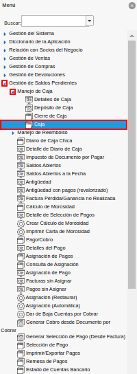
Imagen 1. Menú de ADempiere
Podrá visualizar la ventana “Caja”, con todos los registros creados en la misma.
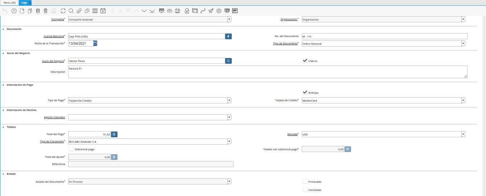
Imagen 2. Ventana Caja
Seleccione el icono “Registro Nuevo”, ubicado en la barra de herramientas de ADempiere y proceda al llenado de los campos correspondientes.
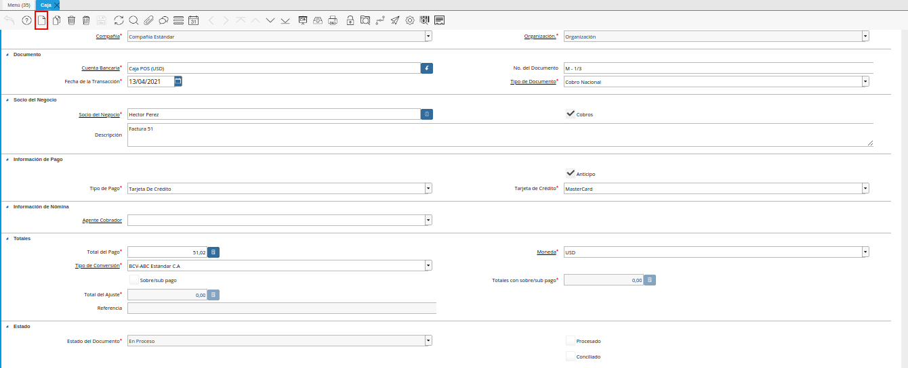
Imagen 3. Icono Registro Nuevo
Seleccione en el campo “Organización”, la organización para la cual requiere generar el registro.
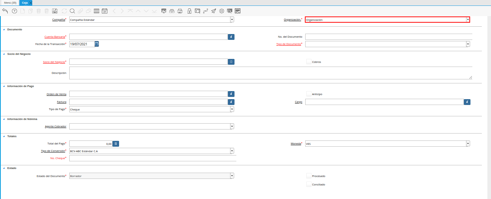
Imagen 4. Campo Organización
Seleccione en el campo “Tipo de Documento”, el tipo de documento que requiere generar. La selección de este campo define el comportamiento del documento.
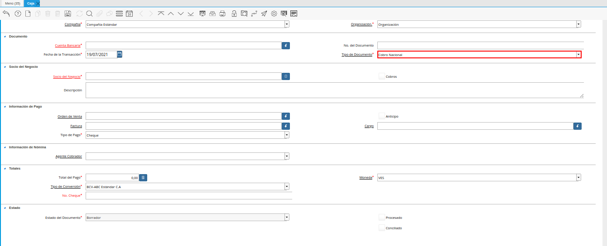
Imagen 5. Campo Tipo de Documento
Seleccione en el campo “Cuenta Bancaria”, la cuenta caja en la cual será asociado el registro que se encuentra realizando.
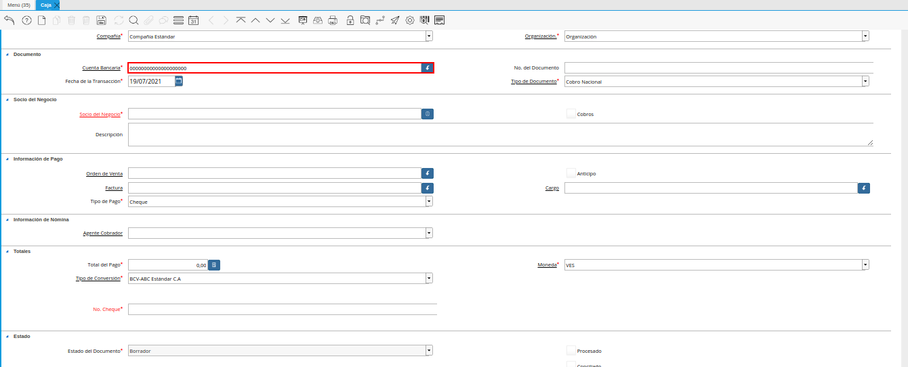
Imagen 6. Campo Cuenta Bancaria
Introduzca en el campo “No. del Documento”, el número de documento correspondiente al registro que se encuentra realizando. Al no ingresar ningún valor en este campo, ADempiere asignará al guardar el registro, el número de correlativo establecido en el tipo de documento seleccionado.
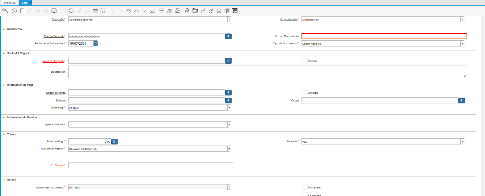
Imagen 7. Campo No del Documento
Seleccione en el campo “Fecha de la Transacción”, la fecha con la cual requiere que se genere el registro.
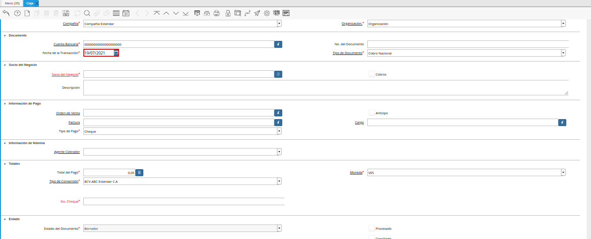
Imagen 8. Campo Fecha de la Transacción
Seleccione en el campo “Socio del Negocio”, el socio del negocio que requiere asociar al registro que se encuentra realizando.
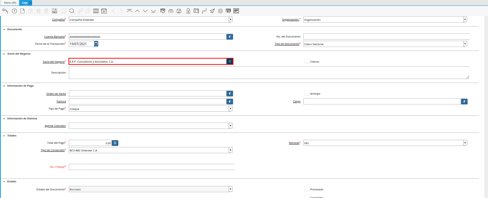
Imagen 9. Campo Socio del Negocio
El check “Cobro”, indica que el documento pertenece a una transacción de ventas.
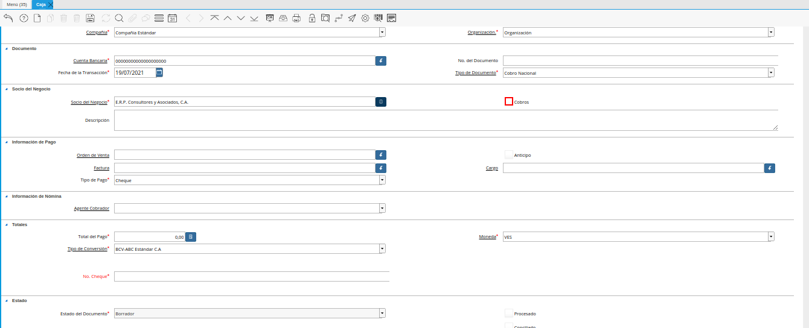
Imagen 10. Check Cobro
Introduzca en el campo “Descripción”, una breve descripción referente al registro que se encuentra realizando.
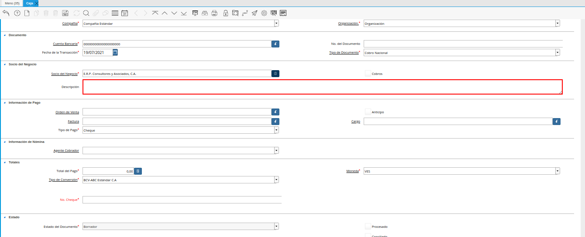
Imagen 11. Campo Descripción
Seleccione en el campo “Orden de Venta”, la orden de venta que requiere asociar al registro que se encuentra realizando.
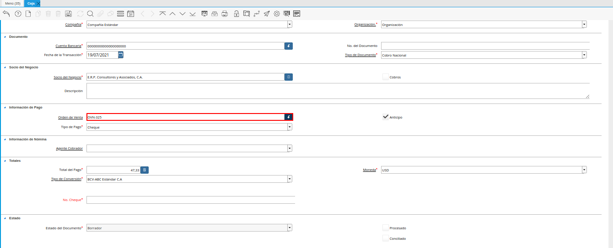
Imagen 12. Campo Orden de Venta
Note
Al seleccionar algún registro en el campo “Orden de Venta”, se inactivan los campos “Factura” y “Cargo”.
El check “Anticipo”, indica que el registro es generado como un anticipo.
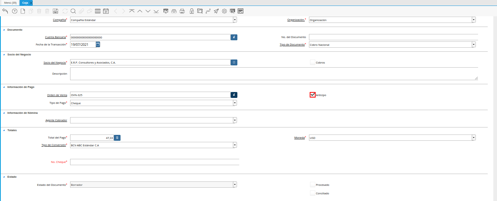
Imagen 13. Check Anticipo
Seleccione en el campo “Factura”, la factura que requiere asociar al registro que se encuentra realizando.
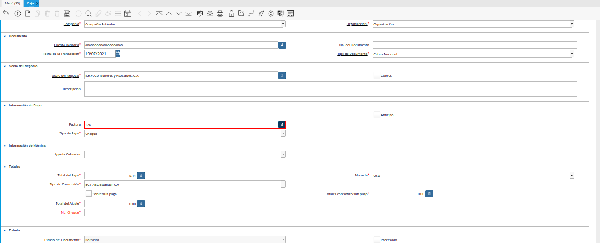
Imagen 14. Campo Factura
Note
Al seleccionar algún registro en el campo “Factura”, se inactivan los campos “Orden de Venta” y “Cargo”.
Seleccione en el campo “Cargo”, el cargo que requiere asociar al registro que se encuentra realizando.
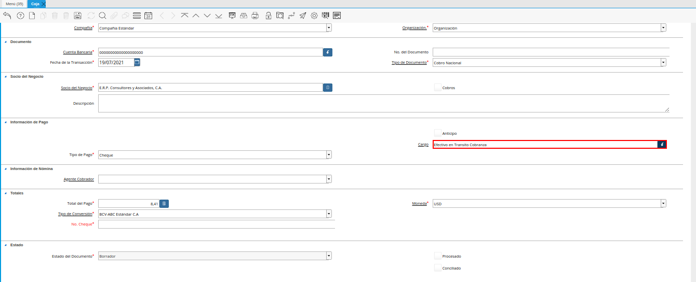
Imagen 15. Campo Cargo
Note
Al seleccionar algún registro en el campo “Cargo”, se inactivan los campos “Orden de Venta” y “Factura”.
Seleccione en el campo “Tipo de Pago”, el método de pago utilizado para el registro que se encuentra realizando.
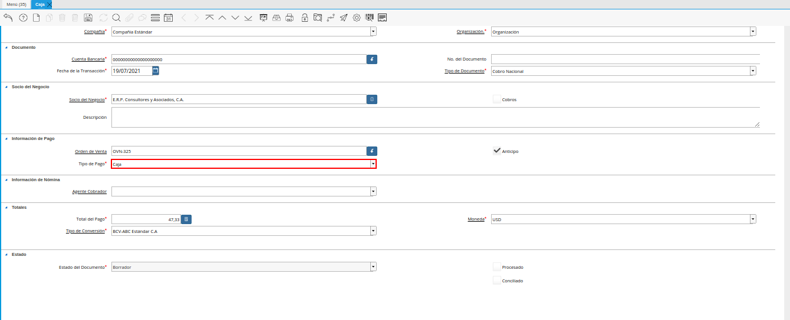
Imagen 16. Campo Tipo de Pago
Seleccione en el campo “Agente Cobrador”, el agente cobrador del registro que se encuentra realizando.
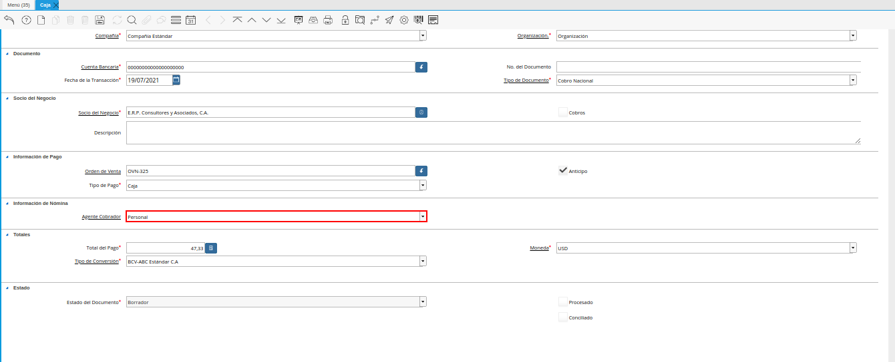
Imagen 17. Campo Agente Cobrador
Introduzca en el campo “Total del Pago”, el monto total del registro que se encuentra realizando.
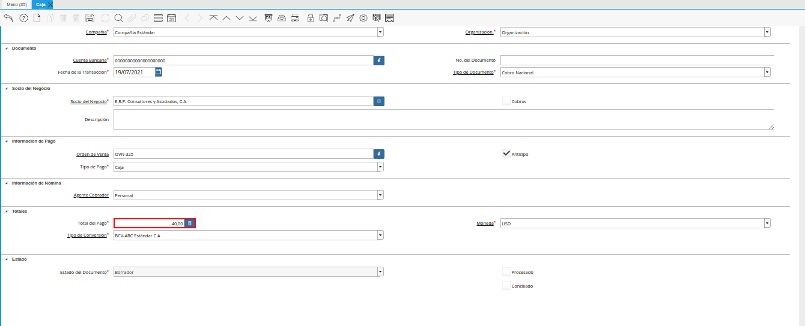
Imagen 18. Campo Total del Pago
Seleccione en el campo “Moneda”, la moneda correspondiente al registro que se encuentra realizando.
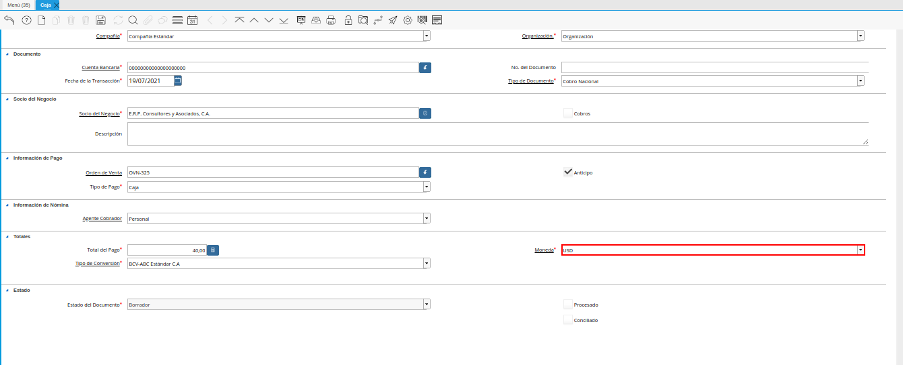
Imagen 19. Campo Moneda
Seleccione en el campo “Tipo de Conversión”, el tipo de conversión correspondiente al registro que se encuentra realizando.
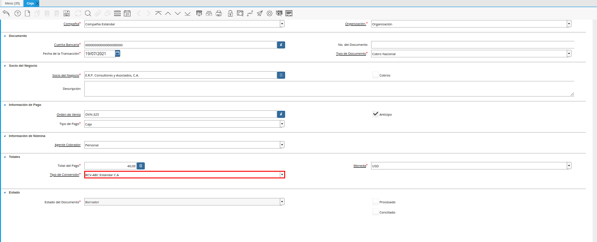
Imagen 20. Campo Tipo de Conversión
Seleccione el icono “Guardar Cambios”, ubicado en la barra de herramientas de ADempiere.
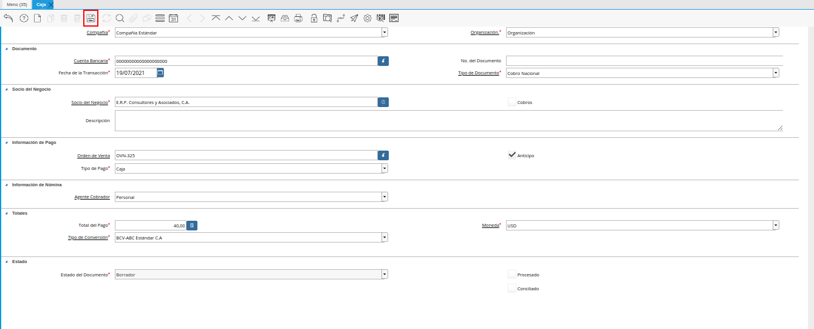
Imagen 21. Icono Guardar Cambios
Para completar el registro de la caja, seleccione el icono “Proceso”, ubicado en la barra de herramientas de ADempiere.
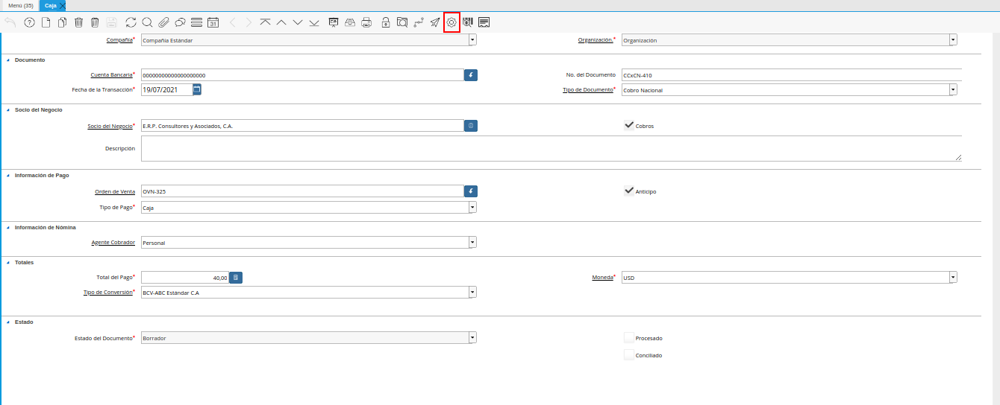
Imagen 22. Icono Proceso
Seleccione la opción “Procesar Pago”, ubicado en el menú desplegado al seleccionar el icono “Proceso”.
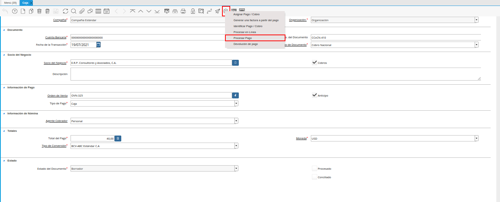
Imagen 23. Opción Procesar Pago
Por último, seleccione en la ventana desplegada “Acción en el Documento”, la opción “Completar” en el campo “Acción en el Documento” y la opción “OK” para completar el registro.
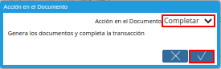
Imagen 24. Acción Completar y Opción OK
Luego de completar el registro, se activa de manera automática el check “Procesado”.
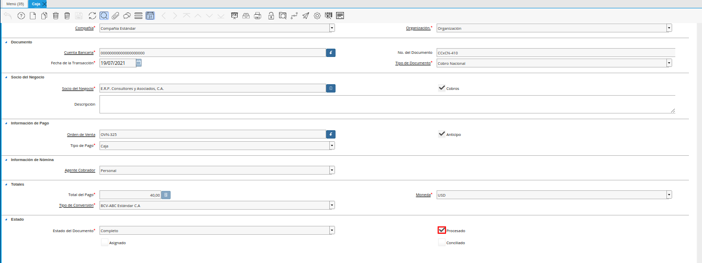
Imagen 25. Check Procesado
Al asignar el registro de la ventana “Caja” a un documento por pagar o cobrar, según sea el caso, se activa de manera automática el check “Asignado”.
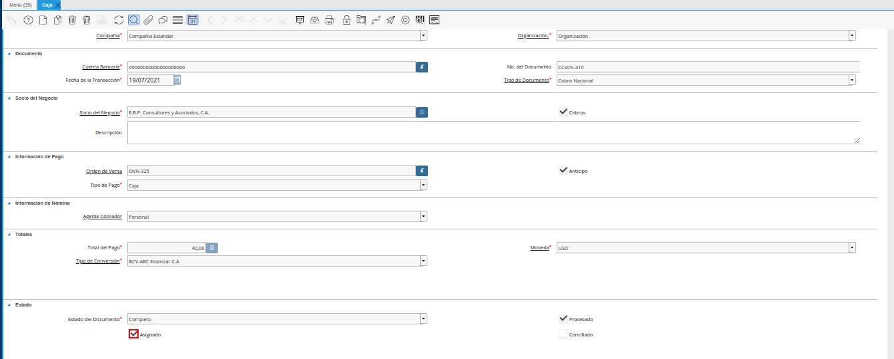
Imagen 26. Check Asignado
De igual manera, al incluir el registro de la ventana “Caja” en un cierre de caja y completar dicho cierre, se activa de manera automática el check “Conciliado”.
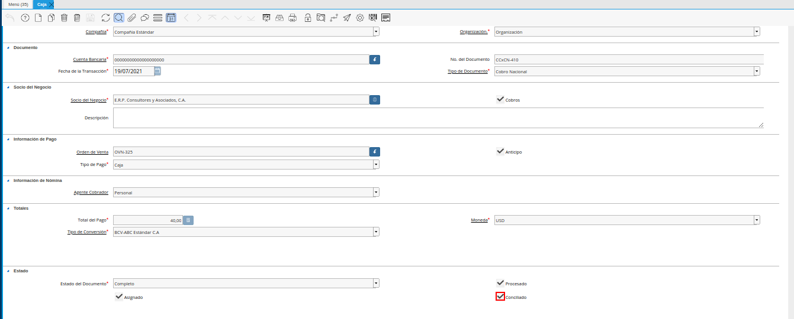
Imagen 26. Check Conciliado